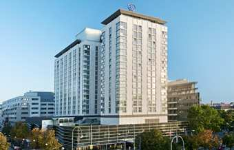

ISMB/ECCB 2011 - Housing
Conference Hotels
Transportation Discount
Directions to Austria Center from Conference Hotels
Hotel reservations for ISMB/ECCB are no longer available through the conference online booking system. To book a room or purchase public transit tickets please contact Mondial Congress at:
This e-mail address is being protected from spambots. You need JavaScript enabled to view it
ISMB/ECCB 2011 is pleased to offer a wide range of hotels and rates for your stay during the Vienna Conference. The room block is managed by Mondial Congress and Events. Room reservations should be made as early as possible - please note these special rates are available until June 10, 2011.
All rates are indicated in EURO, per room, per night, and include breakfast, service and all taxes. The number of nights booked serves as a basis for your hotel invoice. Should the desired hotel (category) no longer be available, similar accommodation will be offered. Please note, the hotel booking can only be guaranteed once the deposit has been received.
All changes or cancellations must be made in writing. Due to organisational reasons we would kindly ask you to make your room reservation by June 10, 2011. Cancellations of rooms received by April 14, 2011 will be refunded, less an administration fee of EUR 35.00. For cancellations received after April 14, 2011 or no-shows the deposit will not be refunded.
Mondial Congress and Events, the official conference housing Bureau can be contacted by sending an e-mail to
This e-mail address is being protected from spambots. You need JavaScript enabled to view it
PLEASE CLICK HERE FOR A HOTEL MAP
|
1) Hilton Vienna Stadtpark - HEADQUARTERS HOTEL
Location: The Hilton Vienna is located in the center of the city adjacent to the popular Citypark “Stadtpark“. St. Stephen’s Cathedral, the Vienna State Opera as well as the shopping districts are only 10 minutes walk away. An ideal location with high speed City Airport Train (CAT) from the International Airport to the City Terminal next to the hotel in just 16 minutes.
Facilities: Parking • Underground parking garage for 300 vehicles Guest Rooms Guest rooms total 579 Hilton rooms 194 Hilton Deluxe rooms 260 Hilton Executive rooms 80 Suites 45 Guest Room Facilities • Individually controlled air-conditioning • Panoramic view overlooking Vienna • Electronic minibars • Security door locks • Laptop safes • Speed acces Internet, WLAN • Modem and fax connection • Non-smoking rooms • Hair dryer • Cable TV, Pay TV
Single Room: Rate per night in Euro: 155.00
Double Room: Rate per night in Euro: 175.00
|

|
|
2) Arcotel Kaiserwasser ****
First and foremost, this 4-star superior hotel stands out by its unique location: It forms part of the new skyline of Vienna near the UNO City—Vienna International Centre and the Austria Centre Vienna with optimum transport connections to the city centre and the airport, and still is directly in the green oasis of the “Alte Donau” oxbow lake, a nature and recreation paradise. The Kaiserwasser hotel is the only hotel in Vienna offering its guests direct access to a beach. In only 10 minutes, you can reach St. Stephen’s in the heart of Vienna by underground — the underground station is located opposite the hotel. The special design in warm wood and red tones as well as top modern technology and generous meeting rooms make ARCOTEL Kaiserwasser the ideal hotel for business travellers and conference participants. Demanding weekend guests who wish to enjoy the varied cultural and shopping experiences offered by the Danube metropolis will appreciate the relaxed atmosphere in this green part of Vienna.
Single Room: Rate per night in Euro: 134.00
Double Room: Rate per night in Euro: 149.00
|
|
|
|
|
|
|
|
|
4) NH Danube City **** (Sold out)
Location: NH Danube City is located in Donaustadt, Vienna's fastest developing business area, adjacent to the Austria Convention Centre, United Nations, the Vienna International Centre, several major office buildings and Vienna's largest recreational area - the Donauinsel. The hotel is just five minutes' walk away from the Kaisermuehlen underground station, which has a direct link (seven minutes) to the city centre.
Facilities: Individually controlled air conditioning and heating, Mini bar Private safe, Direct dial telephone with voicemai,l Modem socket, Coffee and tea making facilities, Two bottles of mineral water, Cable and pay TV, Trouser press, Iron with ironing board, Spacious bathroom with hairdryer. Electricity: 220 volts, 24-hour Room Service
Single Room: Rate per night in Euro: 145.00
Double Room: Rate per night in Euro: 165.00
|
|
|
|
|
|
5) Park Inn By Rezidor SAS ****
Park Inn is enviably located in Vienna's largest recreation areas on the banks of the Danube. Close to the city centre, the hotel is right by the convention centre and the United Nations, making it ideal for both business and leisure travellers.
138 guestrooms including suites
Some Business suites and Superior rooms have kitchenettes for added convenience
Wireless Internet access throughout the hotel
Complimentary indoor parking
Complimentary access to the hotel's Fitness Room
Enjoy the swimming pool, sauna, solarium, steam bath and massage facilities at the Homes Place Lifestyle Club, which is next to the hotel (at an additional charge)
Single Room: Rate per night in Euro: 129.00
Double Room: Rate per night in Euro: 149.00
|
|
|
|
|
|
|
|
|
7) Atlas ***
Location:
The hotel is situated at a park near the Parliament building, close to U2 and U3 "Volkstheater". The centre is within walking distance (5-10 mins).
Facilities:
300 beds in 180 rooms with private bathroom, telephone, internet. Restaurant Bar Garden café
Single Room: Rate per night in Euro: 66.00
Double Room for single use: Rate per night in Euro: 80.00
Double Room: Rate per night in Euro: 92.00
|
|
|
|
|
|
|
|
|
9) Ibis Wien Messe Hotel ***
Location: The hotel is central convenient located close to the Viennese fairground called "Prater".
Facilities: The hotel offers air-conditioned comfort rooms with shower/Toilet, Sat-TV, fax-/modem-entry. Breakfast buffet. Puplic garage attached.
Double Room for single use: Rate per night in Euro: 79.00
Double Room: Rate per night in Euro: 107.00
|
|
|
|
|
|
10) Suitehotel Wien Messe *** (Sold out)
The Suitehotel Wien Messe with 158 suites is centrally located, close to UNO-City, the Austria Center and the Vienna Exhibition Hall. The hotel is only 7 minutes from the city centre and the Stephansdom Cathedral. Vienna Schwechat airport is just 15 kilometres away. The hotel features a bar, a fitness room and a private parking garage.
Room fittings: Audible smoke alarms, Sprinkler in room, 220/240 V AC, Air conditioning, Safe deposit box in room, Radio in room, Satellite / Cable colour TV, Voice mail, Smoke alarm in room Bathroom fittings: Bath tub, Hair dryer in bathroom, Shower tub (separate)
Suite Single Use: Rate per night in Euro: 111.00
Suite Double Use: Rate per night in Euro: 123.00
|
|
|
|
|
|
11) ATH Wien Messe *** (Sold out)
Description: The Austria Trend Hotel Messe Wien has opened its doors on June 1st 2005. Modern architecture and clear design with guest-orientated facilities, combined with the traditional "service to feel well" of Austria Trend hotels group will make the new hotel a perfect place to stay.
Single Room: Rate per night in Euro: 115.00
Double Room: Rate per night in Euro: 130.00
|
|
|
|
|
|
12) Wandl ***
Description: The Hotel is located in the centre of Vienna 200 m from St.Stephans square.
Facilities:
138 Hotelrooms, Suites, all with bath or shower / WC, Telephone, Satellite-TV, Hairdryers will be provided.
Single Room: Rate per night in Euro: 100.00
Double Room for single use: Rate per night in Euro: 125.00
Double Room: Rate per night in Euro: 150.00
|

|
|
13) Academia Saisonhotel **
Location:
The hotel is situated in a quiet residential area; convenient connections by public transport to the centre and the most important sights. Restaurant at Hotel ATLAS (6-8 minutes' walk)
Facilities:
500 beds in 260 rooms, each with private bathroom, telephone, internet, some with balcony. All twin or double rooms are the same size as single rooms. Coffee-shop roof-terrace on 11th floor
Single Room: Rate per night in Euro: 56.00
Double Room: Rate per night in Euro: 74.00
|
|
|
|
|
Transport Discount
Mondial Congress and Events the official conference housing Bureau is pleased to offer discounted Vienna Transit Tickets. Your discounted public transport ticket can be purchased either online via the hotel reservation link or by sending an e-mail to
This e-mail address is being protected from spambots. You need JavaScript enabled to view it
. The transit ticket allows you to use any public transportation within Vienna. Once you have signed the ticket, you are ready to go. Make sure that you carry your ticket with you at all times.
When ordering your ticket with Mondial you will need to choose the number of days for the transit pass:
3-Day Ticket (July 17 – July 19): EUR 12.90
4-Day Ticket (July 16 – July 19): EUR 14.70
5-Day Ticket (July 15 – July 19): EUR 16.50
6-Day Ticket (July 14 – July 19): EUR 18.30
Your additional bonus: If you decide to purchase your public transport ticket and book your hotel guest room with Mondial your ticket is waiting for you upon arrival at your hotel upon check-in.
Travel to the Austria Center Vienna (ACV) from official ISMB/ECCB conference hotels
Nearest underground station to ACV: red line, U1, "Kaisermühlen - Vienna International Center"
From:
Hilton Vienna Stadtpark
U4 Landstrasse -> Schwedenplatz
U1 Schwedenplatz-> Kaisermühlen - Vienna International Center
Arcotel Kaiserwasser (walking distance: 5 minutes)
NH Danube City (walking distance: 5 minutes)
Park Inn Vienna By Rezidor (walking distance: 5 minutes)
Atlas
U3 Volkstheater -> Stephansplatz
U1 Stephansplatz -> Kaisermühlen - Vienna International Center
Austria Trend Hotel Messe
U2 Messe-Prater -> Praterstern
U1 Praterstern -> Kaisermühlen - Vienna International Center
IBIS Wien Messe
U1 Praterstern -> Kaisermühlen - Vienna International Center
Suitehotel Wien Messe
U1 Vorgartenstrasse -> Kaisermühlen - Vienna International Center
Wandl
U1 Stephansplatz -> Kaisermühlen - Vienna International Center
Academia
Tram 46 -> Volkstheater
U3 Volkstheater -> Stephansplatz
U1 Stephansplatz -> Kaisermühlen - Vienna International Center
|